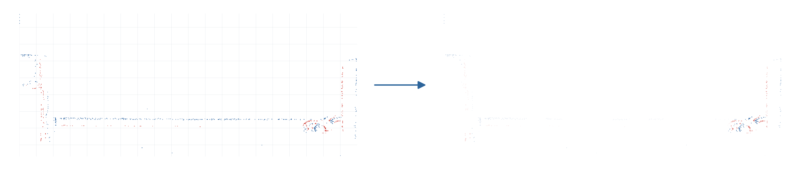

左：実際のイベント点と薄い32×32画素グリッド。右：背景との差が大きい区画ほどイベント点を濃く表示。図内に文章や折れ線はありません。
元の検知器と同じ過去 2 ms、時刻 12.877008 s。実イベント 673 件。区画ごとの個数は保存済み活動量と一致しています。
右図はこの時刻の最大残差を最も濃く表示するよう正規化しています。これは表示コントラストの変更で、検知器の入力・スコア・しきい値は変更していません。 表示上限：標準化残差 3.9014。
青はOFF、赤はONイベント。両極性が同じ画素にある場合は混色。計算では重複イベントも保持し、画像は発火有無で表示します。
右側は区画の正の標準化残差に応じた濃淡表示で、画素単位の背景除去や車両セグメンテーションではありません。別出力の背景推定は区画ごとの統計値です。背景のイベント点を合成していません。